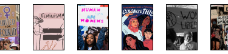

À quoi servent les femmes ?
À quoi servent les femmes? C’est le nom d’un reportage réalisé sur Youtube par la société INA en 1964.
À cette époque on perçoit les femmes comme des êtres en dehors de notre société qui sont juste esclave de l’homme, avec comme seul et unique but, satisfaire l’homme.
La notion d’humanité devient donc inexistante car on ne met pas chaque genre au même niveau d’égalité, deux catégories se construisent dispersant les hommes des femmes. Ces deux catégories ne feront plus qu’un grâce à l’évolution de la société et surtout de la vision de la femme.
Une infériorité marquante
L’analyse que nous allons faire reprend différentes parties de la vidéo et donc différents témoignages. La première qualité qu’un homme citera de sa femme est qu’elle est bonne cuisinière, on pourrait croire qu’elle ne sert qu’à sa et pas aux autres tâches. Un autre homme rajoute qu’ils se réunissent au bar pour se reposer car la femme reste à la maison pour faire le ménage et que ce n’est pas le rôle de l’homme de faire ceci. Ici la vision de la femme se réduit à un objet qui fait juste les taches de cuisine et de ménages, ce qui la réduit à une chose encombrante mais utile.
Déjà ici on voit que des préjugés assez marquants sont présents pour les femmes. C’est pourquoi, le reporteur ajoute que pendant que les hommes se reposent des femmes, les femmes s’occupent des hommes. Cette phrase peut paraître assez marquante et elle réduit même la femme à un état d’esclave. En poursuivant sur ceci les femmes finissent souvent en larmes lorsque les hommes vont leur donner des ordres sèchement, car ils les considèrent comme moins que rien.
Une notion d’humanité inexistante
Les hommes se considèrent comme la seule race d’humanité en pensant que les femmes sont justes accessoires à leur vie. La première chose marquante se déroule au début du reportage où on nous dit qu’entre hommes il ne parle pas de femmes.On pourrait croire qu’elles sont simplement là pour les aider mais qu’il n’est pas utile de parler d’eux.
Par la suite le reporteur nous dit des termes assez marquants qui à l’époque était normal, comme le fait qu’elle travaille pour les hommes, qu’elles s’apprêtent pour eux, qu’elles travaillent dans ce qu’ils ont inventé etc. Ici on voit bien que la femme ne fait pas partie de la société pour les hommes, elle est juste là à leur disposition, pour les servirent.
Vers la fin du reportage on nous dit même que le devoir principal d’une femme est d’être bel et bien maquillés, on la réduit presque à un objet qui est là pour faire plaisir aux hommes uniquement.
Ensuite encore quelques hommes préfèrent donner des ordres aux hommes qu’aux femmes, ici il parle d’amour-propre masculin. C’est même pourquoi tous les hommes interrogés nous disent que les femmes doivent rester à la maison pour que lorsqu’ils rentrent à la maison tout sois prêts. Ici les hommes ne pensent qu’à eux et ignorent le bonheur de la femme, ils en oublient qu’elles ont également besoin d’être heureuse.
De nos jours
Notre époque actuelle a bien évolué en matière de préjugés et d’infériorité entre hommes-femmes. Tout d’abord le taux de femmes à faire des études a énormément augmentées comparé à avant où elle savait qu’elle n’allait pas faire d’études pour pouvoir rester à la maison.
Les femmes travaillent dans divers métiers variés alors qu’avant elle se limitait à être couturière ou infirmière, au niveau politique c’est pareil, au parlement le nombre de femmes est devenu deux fois plus conséquent qu’avant.
Néanmoins quelques préjugés comme le fait que les femmes doivent rester à la cuisine persistent mais elle reste bien plus ironique qu’auparavant.
Vidéo : https://youtu.be/BfW72FjVC6k
Micro trottoir sur le Féminisme
VIDÉO
Article précédent
Vous souhaitez en voir plus ?
N’hésitez pas à regarder les autres articles proposé par d’autres éudiants.
